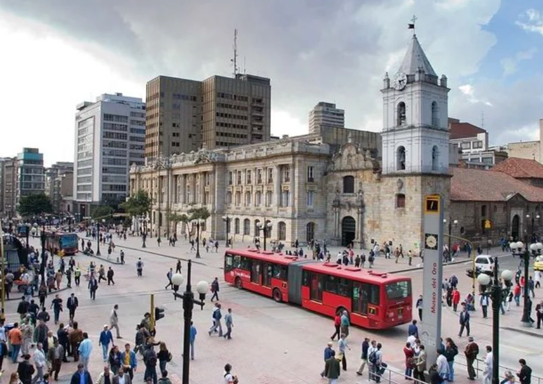
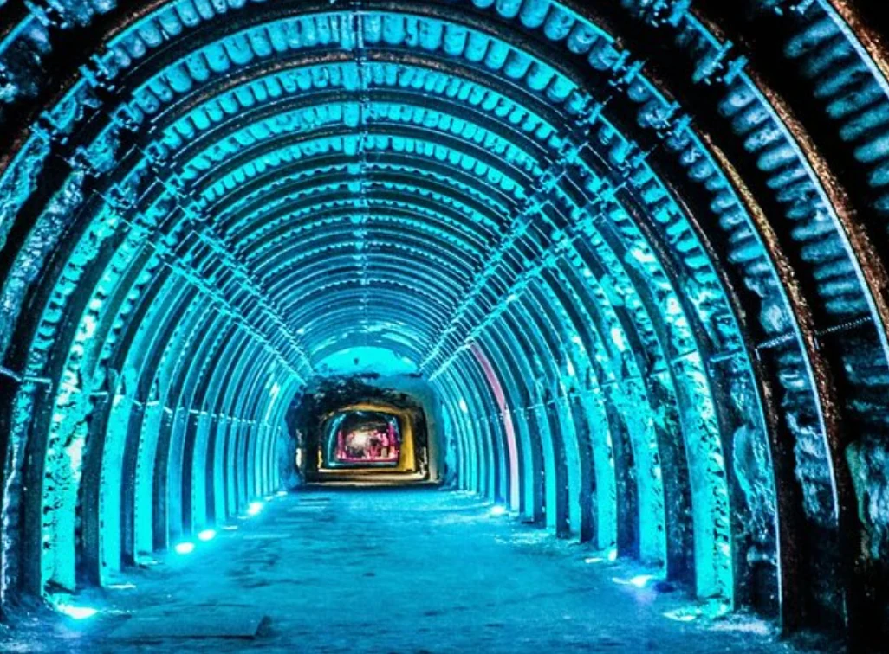
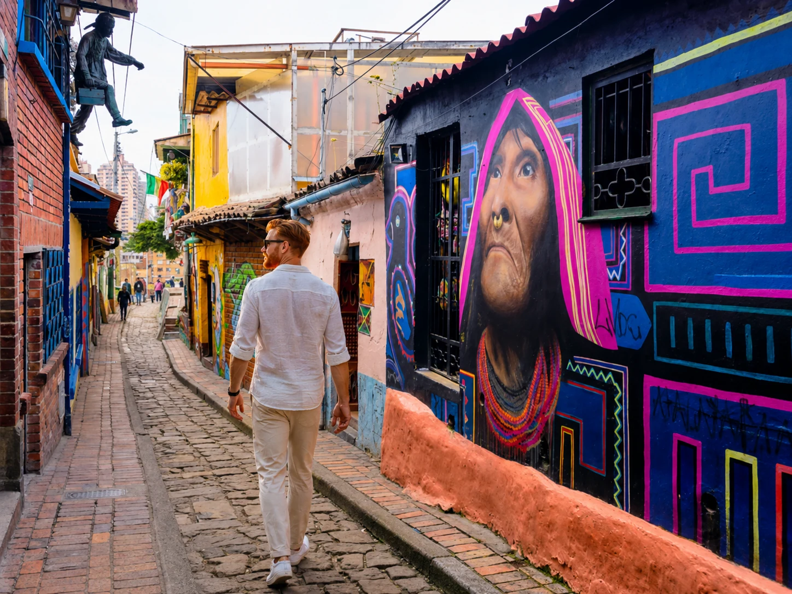

Historic center + Monserrate
Essential Bogotá
For a first visit: La Candelaria, Plaza de Bolívar, museums and the city view. This is the tour that builds context.
For a first visit: La Candelaria, Plaza de Bolívar, museums and the city view. This is the tour that builds context.

A strong alternative to monumental sightseeing, using murals to understand politics, memory and urban transformation.

An efficient way to grasp the urban scale through markets, downtown and areas that would be too far apart on foot.

The classic day trip: a subterranean experience inside a former salt mine, completely outside the capital’s rhythm.

A graffiti route works best when the guide helps decode politics, identity and urban transformation. It is a strong counterpoint to museums and monumental Bogotá.
This is Bogotá’s classic day trip and changes the experience completely: the capital gives way to a former salt mine transformed into a monumental religious space. Some tours focus on Zipaquirá; others combine it with Guatavita.
Start with the historic context + Monserrate.
More identity and contemporary urban context.
A good way to cover more territory in less time.
Changes the landscape and the type of experience completely.
Some links may earn Lipe Travel Show a commission at no extra cost to the traveler.